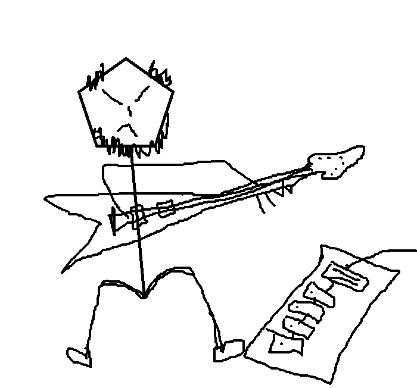
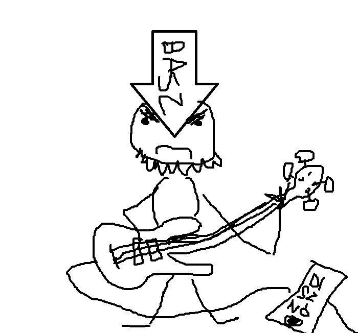
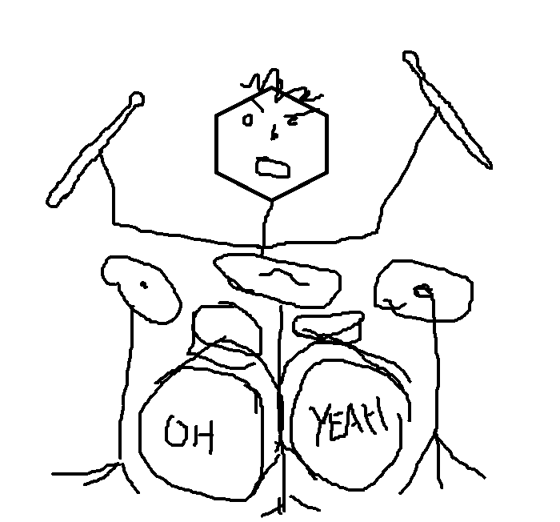
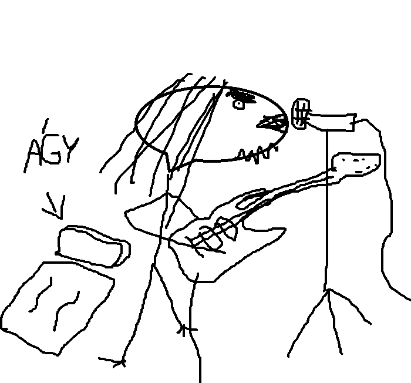

About Us
A 2022-ben alapult többnyire a 90-es, 2000-es évek nu metál hullámából nyerte ispirációját, de stílusát behatárolják az industrial, grunge, sludge elemei is. A dalok mondanivalóját főleg a harag, társadalomkritika, drogok jellemzik megfűszerezve az énekes megalomániára való hajlamával, kiabálással, gitár effektekkel, groovy dobtémákkal és disznó basszusgitárral. Súlyos riffek, baszás, Visual Mud!

Dave
Effekt boi. Gitárszólóival az eget is kettéhasítja.

Ricsi
Egészen alacsonyan játszó basszusgitáros. Hangzása disznó.

Peti
A zenekar lelke a hangszerét hihetetlen precízitással és kreativitással megszólaltató dobos, akit látva biztosak leszünk benne, hogy félisten kategóriában van.

Krisz
Kajabál.